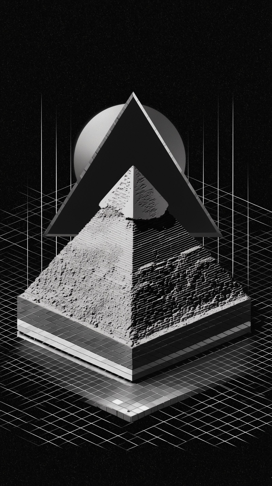

Synthesize your biological telemetry.
Aura maps your bloodwork, diet, and physiological variance into a unified machine-learning model, generating precise protocols for physical optimization.
Precision calibration
for human performance.
We replace generalized health advice with deterministic models. By constantly analyzing your physiological outputs, Aura calibrates your inputs—diet, supplements, and exertion.
Continuous Blood Analysis
Module 01Integrate quarterly lab panels or connect real-time biomarker patches. Aura detects sub-clinical deficiencies before they manifest as symptoms.
Dynamic Supplementation
Module 02Stop guessing dosages. The system formulates daily supplement stacks based on your current recovery state, cortisol curve, and micronutrient burn rate.
Nutrient Partitioning
Module 03Macro-nutrient timing algorithms adjust to your daily physical output and glycemic responses, optimizing insulin sensitivity.
Designed like
instrumentation.
Aura isn't a lifestyle app. It's a technical dashboard for your body, built with the precision of financial or aerospace software.
